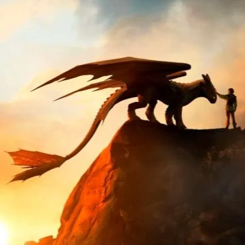
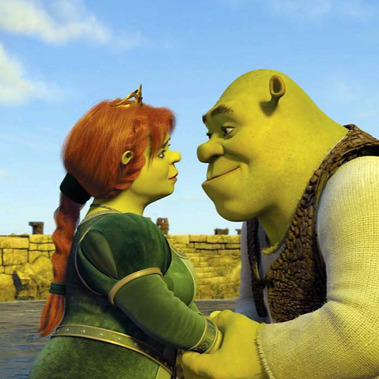
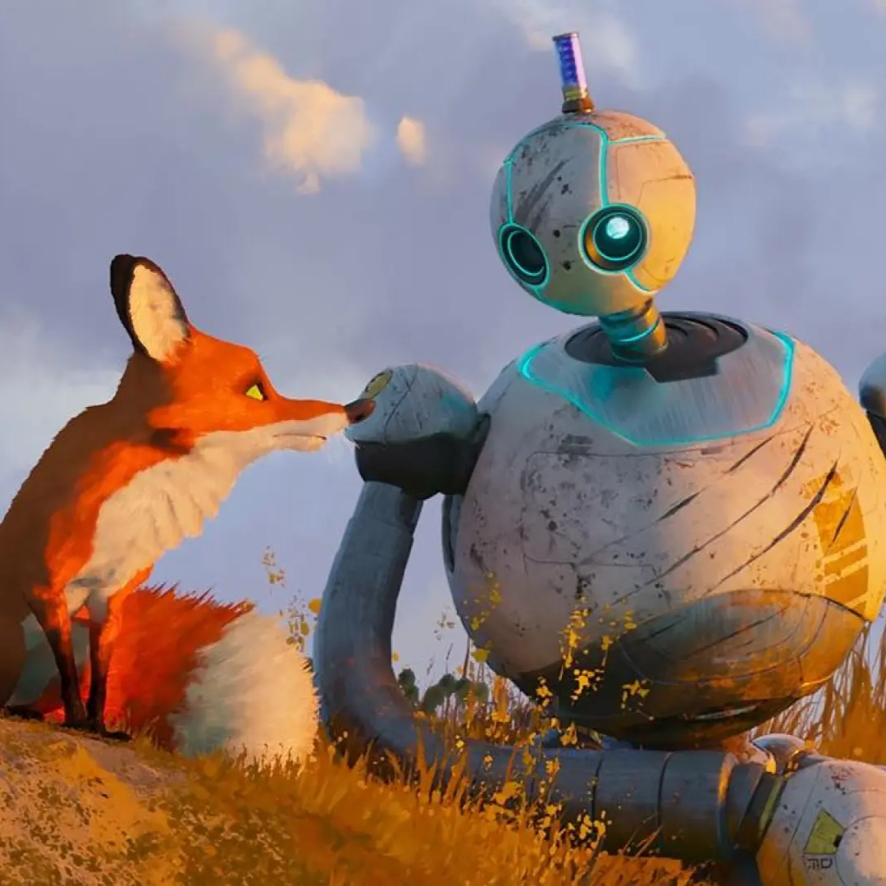
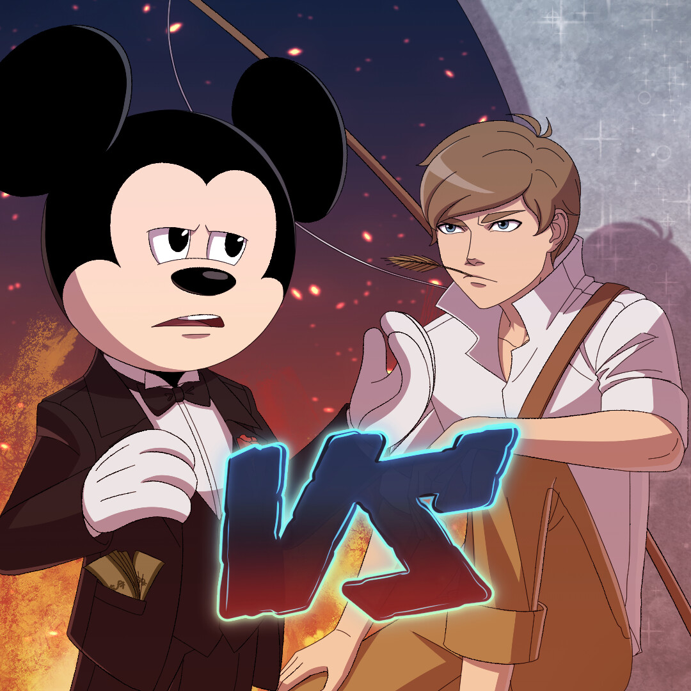
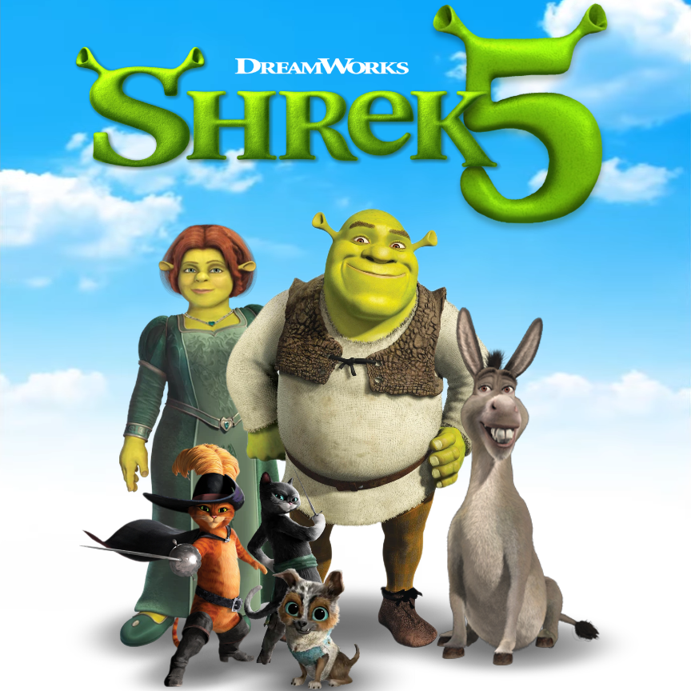

NOTICIAS
|

Tráiler de ‘Cómo entrenar a tu dragón’: el live action de DreamWorks se hace realidad
Ha pasado mucho hasta poder verlo, pero por fin DreamWorks nos ha mostrado un primer tráiler de la adaptación a acción real de Cómo entrenar a tu dragón. Cuando se anunció por primera vez el desarrollo del proyecto, existía cierto escepticismo con la transformación al live action de la cinta homónima de 2010. Leer más |
|

Películas más míticas de Dreamworks y dónde ver
Si quieres ver los mejores largometrajes de animación puede que te plantees Disney+ como suscripción. Pero no es la única plataforma donde vas a ver algunas de las películas animadas más aclamadas de todos los tiempos. SkyShowtime reúne una colección de filmes Dreamworks que te harán disfrutar en familia, por ejemplo. Leer más |
|

Por qué ‘Robot Salvaje’ se ha convertido en el inesperado fenómeno del cine de animación de este 2024
Robot Salvaje es la película de animación de la que todo el mundo habla últimamente. Y es que, la crítica y el boca a boca han convertido esta historia para todos los públicos en un fenómeno que conquista a niños y mayores. Producida por DreamWorks Animation –compañía de la que han salido cintas de animación como Shrek, Cómo entrenar a tu dragón o Kung Fu Panda–, Robot Salvaje llega para conquistar sin precedentes los corazones de todo aquel que entre en la sala de cine. Leer más |
|

Disney vs Dreamworks: ¿cómo nació la rivalidad entre los dos estudios de animación?
Desde que salió el tráiler de Krakens y Sirenas este se hizo viral porque tiene como principal antagonista a una sirena pelirroja que se parece muchísimo a Ariel (La Sirenita). Esto solo revivió la historia de la rivalidad Disney vs DreamWorks y aquí aprovechamos para contártela. Leer más |
|

DreamWorks Animation anuncia el estreno de 'Shrek 5' para 2026
El verano de 2026 no deja de añadir títulos a su calendario. DreamWorks Animation confirmaba la pasada noche que se encuentra ya trabajando en 'Shrek 5'. Un proyecto al que volverán una vez más Mike Myers, Eddie Murphy y Cameron Diaz para poner voz al propio Shrek, al roba escenas Asno y la mismísima Princesa Fiona. Antonio Banderas, la recordada voz de El gato con botas, todavía no está confirmado para esta quinta entrega. Leer más |